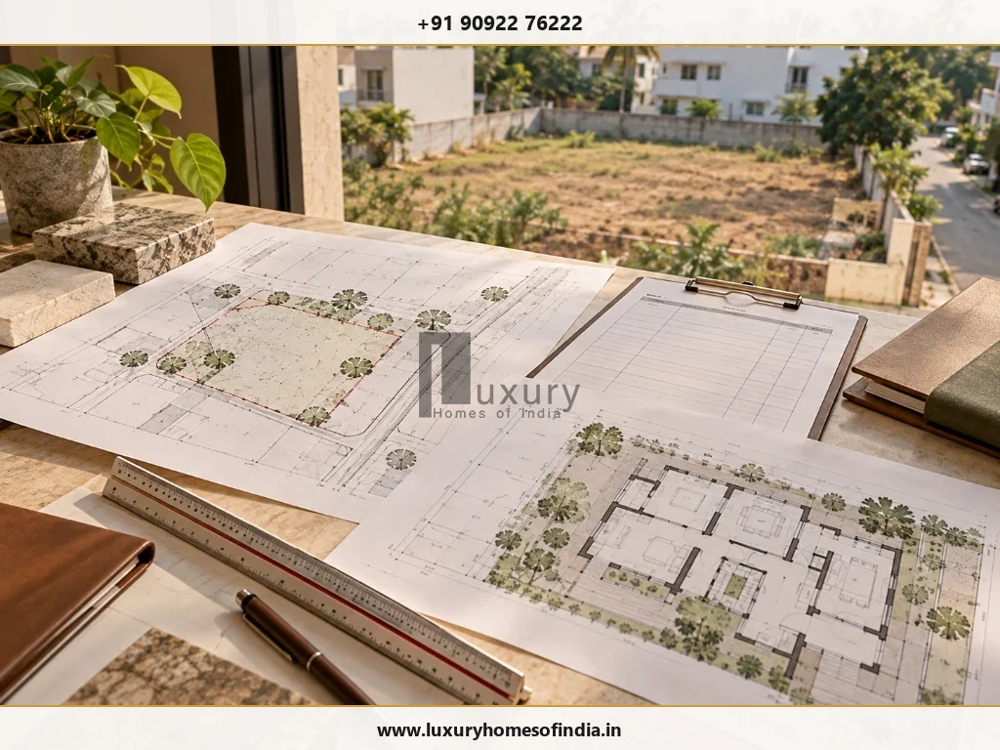

CMDA vs DTCP approval in Tamil Nadu comes down primarily to the property's planning jurisdiction, the type of development proposed and the authority empowered to process that application. CMDA refers to the Chennai Metropolitan Development Authority, while DTCP refers to the Directorate of Town and Country Planning. Neither approval is universally better than the other, and buyers should not choose a plot based only on its advertised approval label.
Before purchasing land or planning a luxury home, verify the property's location, applicable planning authority, layout approval, permitted land use and ownership records. Also establish whether the proposed house requires planning permission, a building permit or additional clearances. Tamil Nadu's Online Single Window Portal supports planning-application functions across participating authorities, so the correct application route should be confirmed using the current official process. These checks help buyers assess whether a plot is suitable for the residence they intend to build, rather than discovering important restrictions after purchase.
Key Takeaways: CMDA vs DTCP at a Glance
- Jurisdiction Dictates Authority: CMDA governs the designated Chennai Metropolitan Area (CMA), while DTCP oversees planning areas across the rest of Tamil Nadu. Buyers cannot freely choose between the two.
- Neither is Inherently "Better": An approval is not a measure of luxury or quality; it is a statutory planning sanction. A DTCP plot in Coimbatore or ECR can be just as legally sound as a CMDA plot in Anna Nagar.
- Layout Approval ≠ Building Permit: Having an approved plot or layout regularisation does not grant automatic permission to build. A separate building plan permit must be obtained for the house.
- Integrated Single Window Submission: Applications for both CMDA and DTCP planning permissions are processed via the unified government portal at onlineppa.tn.gov.in.
- 7-Point Plot Due Diligence: Always verify the underlying layout order, compare physical boundaries with FMB sketches, verify patta ownership, and evaluate building envelope feasibility before paying an advance.
1. What Is CMDA Approval?
The Chennai Metropolitan Development Authority is the statutory planning authority associated with the Chennai Metropolitan Area (CMA). Its planning functions operate within the applicable legal framework, development regulations and allocation of responsibilities among competent authorities under the Tamil Nadu Town and Country Planning Act, 1971.
CMDA-related planning permission may be relevant to residential, commercial, institutional and other development proposals, depending on the site's jurisdiction and the category of development. Official reference: Chennai Metropolitan Development Authority (cmdachennai.gov.in).
What does CMDA planning permission mean?
Planning permission concerns whether a proposed development satisfies the applicable planning requirements and master plan zoning, subject to the conditions of the permission. It evaluates land use, access road width, building height, floor space index (FSI), and mandatory boundary setbacks.
Buyers should inspect the actual approval order and its conditions rather than rely exclusively on a seller's verbal assurance or a marketing brochure.
2. What Is DTCP Approval?
The Directorate of Town and Country Planning (DTCP) is responsible for planning functions in its applicable jurisdiction in Tamil Nadu, encompassing all urban and rural planning areas outside the Chennai Metropolitan Planning Area.
DTCP-related applications concern residential layouts, commercial land subdivision, individual building proposals, and institutional developments governed by the Tamil Nadu Combined Development and Building Rules, 2019 (TNCDBR-2019). Official reference: Tamil Nadu Online Single Window Portal for Planning Permission (onlineppa.tn.gov.in).
However, a property's location alone does not establish the precise approval route in every case. The relevant Local Planning Authority (LPA), Regional Deputy Director, and local body (Panchayat / Municipality) must also be considered under delegated powers.
Is DTCP approval the same as CMDA approval?
No. Both are statutory authorities associated with planning regulation in Tamil Nadu, but they operate within different geographical jurisdictions and administrative arrangements. The appropriate authority is determined strictly by the property's location and the nature of the proposed development. A buyer cannot select either authority at will.
3. CMDA vs DTCP: Key Differences
Understanding the exact administrative and jurisdictional differences clarifies why plots are categorized under one authority or the other:
| Comparison Parameter | CMDA Approval | DTCP Approval |
|---|---|---|
| Full Form | Chennai Metropolitan Development Authority | Directorate of Town and Country Planning |
| Planning Jurisdiction | Chennai Metropolitan Area (CMA — Chennai district and designated contiguous parts of Tiruvallur, Kanchipuram, and Chengalpattu districts) | Applicable planning areas across the rest of Tamil Nadu (outside the Chennai Metropolitan Planning Area) |
| Main Consideration | Development proposals within CMA evaluated under the Second Master Plan for Chennai | Development proposals within regional master plans and detailed development plans across Tamil Nadu |
| Typical Relevance | Layout approvals, commercial complexes, multi-storey buildings, and non-delegated residential projects | Residential layouts, township developments, and regional building permission sanctions |
| Application Route | CMDA Online Planning Permission Portal (onlineppacmda.tn.gov.in) or Single Window Portal | Tamil Nadu Online Single Window Portal for Planning Permission (onlineppa.tn.gov.in) |
| Building Permission | Sanctioned by GCC or local municipality after CMDA planning permission is issued | Sanctioned by local Panchayat / Municipality / LPA under delegated planning rules |
| Fees Structure | Current prescribed scrutiny, development, and I&A charges assessed for CMA | Current prescribed charges assessed under DTCP fee schedules and local body norms |
| Better for a Luxury Home? | Neither is inherently better. Suitability depends on site dimensions, legal title, access, and zoning. | Neither is inherently better. Suitability depends on site dimensions, legal title, access, and zoning. |
The practical distinction is jurisdiction, not quality. The planning authority label does not by itself determine whether a plot is a sound financial investment or whether it can accommodate a particular architectural vision.
4. How to Identify the Correct Approval Authority
Before submitting an application or paying a financial deposit for a plot, establish the site's current planning jurisdiction using these guidelines:

- If the property is in Chennai: Check whether the revenue village lies within the Chennai Metropolitan Planning Area. Then confirm whether the building category falls under GCC's delegated powers or requires direct CMDA planning permission.
- If the property is in a Chennai suburb: Do not rely on postal pincodes, colloquial neighborhood names, or real estate marketing terms like "greater city limits." Verify the exact planning boundary using the property's revenue survey number and village name against official CMDA boundary maps.
- If the property is elsewhere in Tamil Nadu: Identify the relevant DTCP Regional Office, Local Planning Authority (LPA), or Village Panchayat with statutory jurisdiction over the area.
Core Checklist The Four Details to Verify First
- Survey Number, Village & Boundaries: Reconcile the sale deed description with revenue village records.
- Current Planning Jurisdiction: Confirm whether the site falls under CMDA or DTCP.
- Approval Status of the Specific Plot: Verify the original layout approval order number and sanctioned drawing.
- Building Permit Requirements: Establish which local body issues the final building license for the intended home.
5. How to Verify a CMDA-Approved or DTCP-Approved Plot
An advertised approval label on a hoarding or brochure is a starting point for verification, never the final proof. Before purchasing residential land, complete these seven essential checks:
- Obtain the Actual Approval Order: Demand a certified copy of the original planning permit or layout approval order. Confirm the issuing authority, reference number, date of sanction, and any conditional covenants.
- Compare Approved Layout Drawing with the Physical Plot: Verify that the advertised plot number, orientation, road frontage, and dimensions match the sanctioned layout drawing. Beware of unapproved sub-divisions of sanctioned plots.
- Confirm Permitted Land Use: Check whether the plot is zoned for residential use under the master plan, or if it falls into agricultural, open space reservation (OSR), or institutional zones.
- Examine Access and Layout Provisions: Check that access roads meet statutory road-width requirements and have been formally gifted to the local body via registered gift deed.
- Check Ownership Independently: Have an independent property lawyer examine the 30-year title chain, Encumbrance Certificate (EC), patta in the seller's name, and revenue records.
- Investigate Site-Specific Constraints: Check for flood exposure, proximity to lakes/channels requiring PWD buffer zones, high-tension lines, or planned highway widening alignments.
- Confirm Proposed Building Feasibility: Engage an architect to test whether your intended home design (bedrooms, parking, garden) fits within the permissible building envelope under setback rules.
6. Does an Approved Plot Automatically Allow House Construction?
No. Layout approval and permission for an individual building are two completely separate statutory stages.
A layout approval relates only to the legal subdivision of land into buildable plots, public roads, and civic amenity areas. Once you purchase an approved plot, your proposed individual house must be independently designed, scrutinized, and sanctioned under applicable building regulations.
Depending on the building proposal, the approval process involves:
- Verifying ownership and the plot's approved status.
- Checking permitted land use, road width, and statutory setbacks under TNCDBR-2019.
- Preparing compliant architectural drawings through an appropriately registered professional.
- Obtaining planning permission and a building permit from the competent local body.
- Securing additional statutory clearances or certificates where applicable.
Do not commence excavation or foundation work on the assumption that an approved layout alone confers permission to build.
7. What Is the CMDA or DTCP Approval Process?
While specific workflows differ between CMDA and DTCP, homeowners can prepare using this six-stage framework:
Stage 1 Verify the Property
Assemble registered ownership deeds, patta, Field Measurement Book (FMB) sketches, and verified layout approval records.
Stage 2 Confirm the Authority
Identify the governing planning jurisdiction (CMDA or DTCP), the applicable application module, and the local body that will issue the building permit.
Stage 3 Test Design Feasibility
Evaluate mandatory setbacks, permissible height, floor space index (FSI), and parking requirements before freezing architectural floor plans.
Stage 4 Prepare the Application
Engage a registered architect or licensed surveyor to prepare AutoCAD drawings, structural stability undertakings, and required affidavits.
Stage 5 Submit and Respond
Submit the application online via the Single Window Portal, remit prescribed scrutiny fees, track site inspection, and respond promptly to online queries.
Stage 6 Confirm All Required Permissions
Receive the sanctioned planning permission, pay local body charges, and obtain the formal Building Permit and license before starting construction.
8. Documents Commonly Required
Use this comprehensive document checklist to organize your application dossier:
| Document or Record | Regulatory Purpose |
|---|---|
| Sale Deed or Ownership Documents | Supports legal ownership verification and applicant's lawful right to develop the site. |
| Patta and Applicable Revenue Records | Establishes recorded land particulars, revenue classification, and owner name in government records. |
| Survey Records or FMB / TSLR Sketch | Supports boundary correlation and physical dimension checks against revenue maps. |
| Approved Layout Order & Sanctioned Drawing | Verifies that the plot forms part of an authorized layout and satisfies subdivision conditions. |
| Site Plan and Proposed Building Drawings | AutoCAD digital drawings presenting the intended development for technical planning scrutiny. |
| Registered Professional's Credentials | Registration details and digital endorsements of the Architect (COA) or Licensed Surveyor. |
| Previous Permissions (where relevant) | Supports reconstruction, structural alteration, or regularisation applications. |
| Prescribed Declarations & NOCs | Addresses structural stability undertakings, owner affidavits, and site-specific department clearances. |
9. CMDA vs DTCP Approval Fees
There is no single flat fee that applies universally across CMDA or DTCP applications. Charges depend on proposed built-up area, land guideline values, building height, and municipal classification. For a detailed breakdown of statutory rates, explore our guide to Building Plan Approval Fees in Chennai and Tamil Nadu.
Statutory components typically include:
- Online scrutiny fees assessed per square metre of floor area.
- Development charges for land and building under Town and Country Planning provisions.
- Infrastructure and Amenities (I&A) charges for larger developments.
- Construction Workers Welfare Fund contribution (1% cess).
- Local body building license fees and vacant land taxes.
Professional fees for architectural design, structural engineering, total-station surveying, and legal review should always be budgeted separately from statutory government fees.
10. How Long Does Approval Take?
Turnaround times vary based on application category, drawing accuracy, and departmental inspections. While qualifying small homes may obtain instant approval through self-certification under G.O. Ms. No. 118, regular scrutiny typically spans 4 to 8 weeks. In Greater Chennai Corporation limits, a time-bound 27-day process has been implemented for covered applications. For an in-depth review of durations, see our guide on How Long Building Plan Approval Takes in Chennai.
11. What Should Luxury-Home Buyers Check Before Designing a Villa?
For a luxury residence, plot feasibility should precede detailed architectural design. Planning controls directly dictate building massing, orientation, usable outdoor space, and privacy.

Before freezing your bespoke villa design, review these seven fundamental questions:
- Plot Capacity: Can the plot comfortably accommodate the desired room programme, double-height volumes, and parking without breaching setback rules?
- Setback Geometry: What front, rear, and side setbacks are mandatory based on the proposed building height and road width?
- Luxury Amenities: Are basements, swimming pools, outdoor verandahs, and rooftop entertainment pavilions permissible on this site?
- Environmental Constraints: Are there watercourse buffers, canal reservations, or Coastal Regulation Zone (CRZ) setbacks affecting building placement?
- Statutory Permissions: Which specific planning permissions and building permits are required for this scale of residence?
- Project Cost Clarity: What are the projected statutory charges, infrastructure amenities levies, and professional fees?
- Design Harmony: Can the home meet your family's lifestyle expectations within governing building rules?
Frequently Asked Questions
Conclusion
CMDA and DTCP are not competing approval options that a buyer can select freely. The applicable planning jurisdiction, development category and competent authority determine the route to follow.
Before buying a plot or designing a luxury home in Tamil Nadu, verify the approval records, ownership, land use, building feasibility and current permission requirements. This creates a more reliable foundation for architectural planning and helps identify constraints before they become costly design changes.
Planning a Luxury Residence in Tamil Nadu?
Begin by establishing what the plot permits and what approvals your proposed residence will require. Luxury Homes of India coordinates site due diligence, architectural design, statutory sanctions, and turnkey luxury construction across Chennai and Tamil Nadu.
Schedule a Site Consultation → Explore Construction CostsWritten by: Luxury Homes of India Editorial
Reviewed by: Technical Compliance & Planning Review Team | Luxury Homes of India